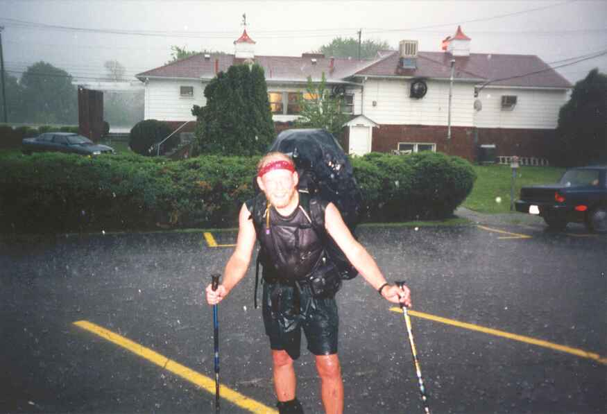
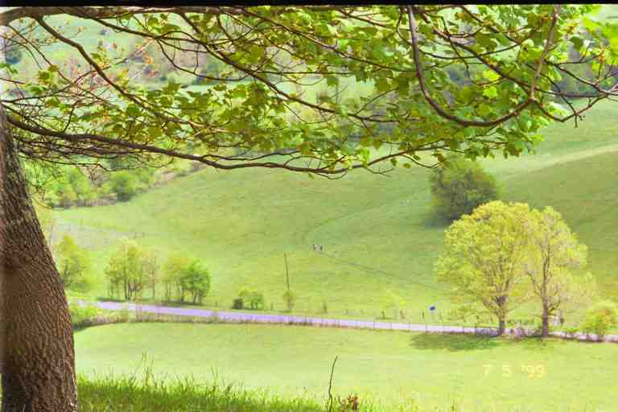
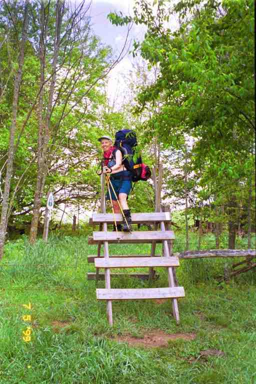
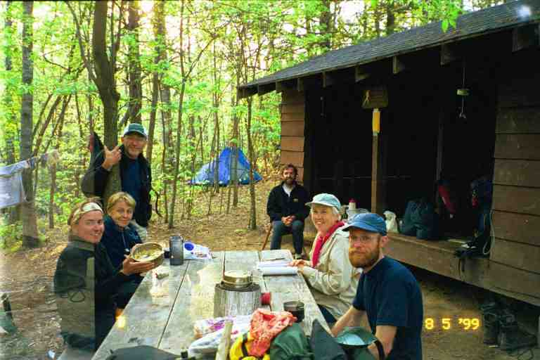
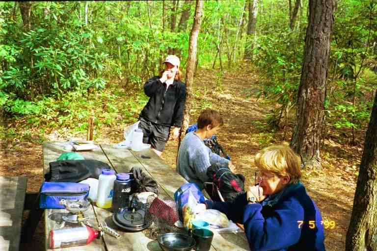
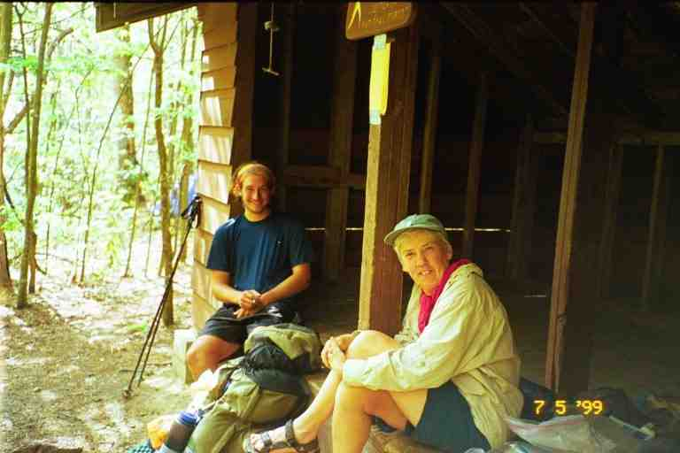
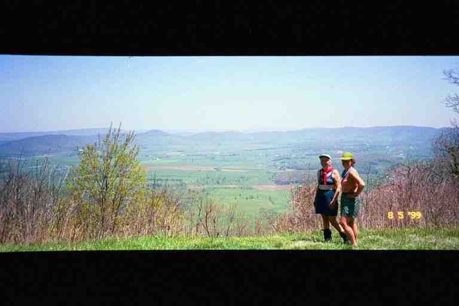
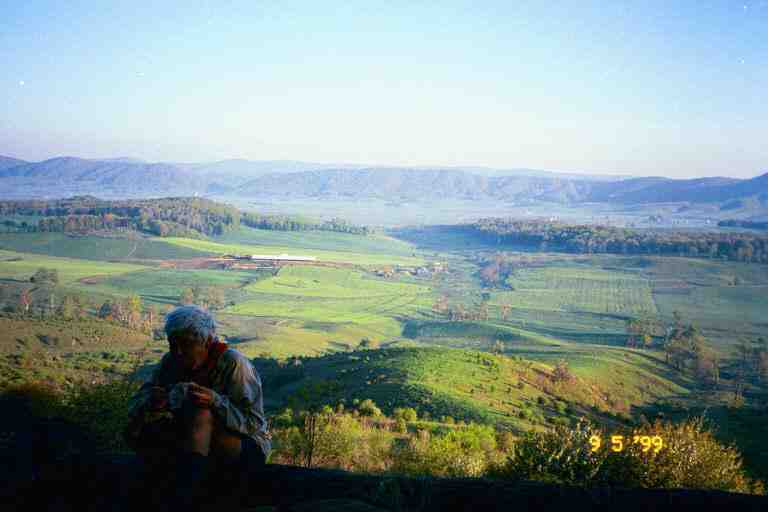
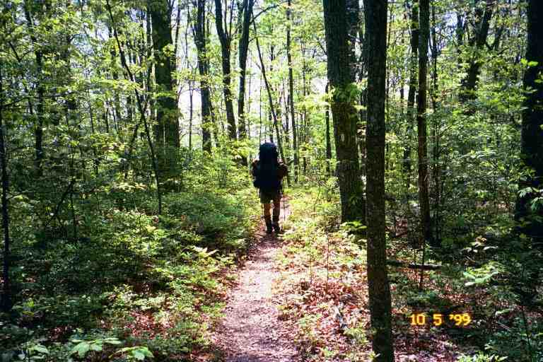
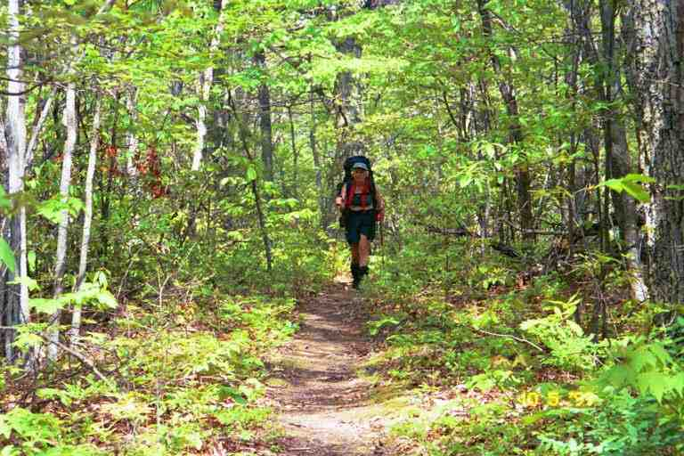

At 9 a.m. on Friday May 7, we were on the crest of a hill that sloped down to US 11. On the other side of the two lane highway was the The Village Restaurant and behind it the Village Motel. Adjacent and to the right was a Texaco truck stop and further to the right a Dairy Queen. Interstate 81 ran behind and above all of them. Once down to the highway, the trail followed the highway to the right and then went under the interstate; however, we would be stopping here for a day or so before going on.
The motel is a typical small one storey place. There was a parking lot between it and the back of the restaurant. The motel office said it was too early to get a room because people had not left yet. Rooms would not be available until early afternoon, except for a double room with a broken shower, that worked with a vice grip, that we could have at 11 a.m. We took it ($37).
We asked about the package from SONGBIRD waiting for us. A small room off the office had packages stacked on shelves to the ceiling. After some searching, we finally located a small plastic bag of TVP with an envelope attached addressed to MA. Inside was a Mother's Day card that said: "To our Mother on the Trail". It was signed by about 20 hikers and had lots of personal notes. It almost had us in tears. It turns out that SONGBIRD had purchased it and collected the signatures. We later mailed it home as a keepsake from the trip.
There were a number of hikers here including HOLLY and DOOLEY who were packing to leave. They again told us of their wedding plans. It was going to be July 17 on the trail at the lodge on the summit of Mount Greylocks, the highest spot in Massachusetts. All hikers were invited and rides would be provided back to the trail for anyone within 200 miles of the wedding.
We went to the restaurant with FREE SPIRIT and had a great big breakfast (biscuits and gravy for me, of course). PATCHES was having breakfast and one of their famous milkshakes, with GRUFF and another hiker. We were amazed at the inexpensive prices and the quantity of food. I remember that a large glass of orange juice was $ 1.50. We stayed at the motel the next day also, and had all our meals at this restaurant. There is some dispute about the number of milkshakes MA had during our stay (I always claim 5), but whatever the number it was surprising for a person who did not like ice cream before our trip. The restaurant was well known along the trail for its thick milkshakes which were made with very hard ice cream. I can still see the waitresses bent over the freezer, struggling to scoop it. The cost was also $1.50.
The motel and restaurant are quite popular with hikers because of the prices and because it is right on the trail and accepts maildrops. As a result, hikers tend to congregate here and hang out together for a day or two, sharing rooms and sometimes sleeping on the floor. Another reason is that it was difficult to get to other services. The small town of Atkins and its post office are 2 miles to the west, and the larger town of Marion is a further 5 miles. There is very little traffic here, because the interstate is adjacent, making it difficult to get a ride. It was easiest to get a ride by asking restaurant patrons as they left. There is, however, an incentive to get to town to obtain supplies because the only place here is the truck stop next door with its outrageous prices.
The motel has a sidewalk running along the front with an overhanging roof. We sat on chairs there talking with friends while waiting for our room. We met a number of thru hikers, including WATERFALL, TAGALONG, MAGNOLIA, REDSTRIPE, SKYDOG, ELF, and RAINDANCER. Later in the day, GIT BACK (with CASSIDY), LORAX and FAST EDDIE arrived and crashed with FREE SPIRIT in her single room. JUNKER drove in that afternoon with DUKE and BLUET.
After settling in and having a long shower, we watched some TV, did our laundry and hung around outside. A hiker asked us to mail his boots back home for him on our trip to the post office that afternoon. Around 3 p.m. we stood at the road in front of the restaurant looking for a ride, without much success. JUNKER who was sitting outside the motel, felt sorry for us and offered us a ride.
He drove us to the post office in Atkins where we mailed back some winter gear. Actually we did not mail it home but to our internet friends Jo and Ted Post in Maryland whom we had never met but who agreed to hold our stuff for us until we needed it further north. We mailed our fleece jackets, longjohns, tuques, and mitts. I kept my very thin polypro longjohn tops to use as long sleeve sweaters on cool nights. We kept our outer shells as rain and wind protection and possibly for warmth. Most people mailed back their shells and kept their fleece. The latter was probably a better idea because fleece jackets make a better pillow than the shells. For rain protection we could have obtained a thin rain jacket. In fact rain gear is often not of much use because we would likely get more wet from sweat than we would from rain.
JUNKER then drove us to the Walmart mall in Marion where we bought our groceries. NATTY and POCO were here. We had not seen them since the Hiawassee area.
On the way back, there were dark ominous clouds in front of us. When we reached the motel, a thunderstorm began with heavy rain and hail. Some of the hail was literally golf ball size and collected on the ground. We all sat out front of the motel enjoying it. Near the end of the storm SINGLEMALT, BALTIMORE JACK, CHICKEN and CABOOSE arrived with tales of being battered by the hail. SINGLEMALT was heading north whereas the other three had flipped flopped by getting a ride to Pearisburg and were hiking back to Damascus for Trail Days. Attached is a picture of SINGLEMALT with hail and rain falling around him, taken at the motel. Behind him is the back of the restaurant. The picture comes from his journal and I am not sure if it was taken when he arrived or after FREE SPIRIT insisted that he go back out and stand there so she could take a picture.

At supper that night we met HEDGEHOG and his wife from England. They had started together but she was injured and was getting a ride to Pearisburg where she would wait for him. Their plans were now in limbo. We also met two of the people who had been section hiking with SINGLE TRACK and CARIBBEAN QUEEN. They told us that the two of them would be arriving the next day. Some locals were showing off the hail damage to the paint on their cars.
We got up the next day planning to relax, but we decided first to hitch a ride to the Post Office where we could mail the Mother's day card home and I could perhaps get a haircut in Atkins or Marion where I had seen a barbershop. We tried hitching a ride after breakfast but without luck so we decided to walk a little further along the road. We walked about a mile in our sandals without luck. Nobody wanted to stop. Looking back, we could maybe have had more success if we had our backpacks, which would have identified us as hikers. We were wearing the top of our packs which convert to fanny packs. Another reason for problems is there is a prison in Marion and people are reluctant to give rides.
There were homes lining the road and at one point a gentleman came out of his house heading to his car. I did not want to directly ask for a ride, so I called out asking how far the post office was. He said it was about a mile away. He promptly got in his car and drove on passed us in the direction of the post office.
We finally got a ride to the post office where SINGLEMALT was opening his maildrop and offered us some batteries and film which he did not need immediately and did not want to carry. We paid him for them. We tried to get a lift to Marion. After 45 minutes and at least 300 cars, we gave up. We noticed SINGLEMALT, getting in the back of LONE WOLF's truck (one of the hikertrash), so we went over. He would drive us to the motel or to Marion. If we went to Marion we would be on our own to get back because he was heading on to Damascus. We accepted a ride back to the motel.
We hung some wet clothes on a swing set in the sun and then spent the day relaxing. We watched old movies and also sat around drinking beer with SINGLETRACK and the rest of the gang in the shade in front of the motel and on chairs in the grass next to the parking lot. RAINDANCER and I had a water gun fight and MA and I gave her a card for her thirtieth birthday. That night a number of us went to the restaurant to celebrate her birthday, and she received her meal free. She had the most expensive item on the menu, a thick steak. These two establishments made good business from the hikers and their reputations were well deserved. The prices were great, and they treated us well. The staff at the restaurant was extremely nice and friendly.
The next morning, after a large breakfast, we headed out. The first person we met was COURT DOG hiking towards us. His father was no longer hiking with him. He had stayed at Davis Path Shelter, about 3 miles up the trail, and was coming back down to Atkins where his parents were to meet him for Mother's Day breakfast. I told him I was taking MA for a Mother's Day hike.
The day was characterized by open woods and pastures. There were a few climbs but they consisted mostly in gradual changes in elevation as we went through fields and woods. The attached beautiful picture shows SKY DOG and RED STRIPE as two little dots approaching VA 610 through a pasture far below us. There were many stiles to cross as we changed fields or as we arrived at roads. As we went through pastures, we encountered cattle or evidence of their passage. We had to watch our step.


I do not know the history of the trail in this area, but it is possible that the ATC (Appalachian Trail Conference) has bought the farm land here, as it has in many other areas, and has an agreement to allow the cows to graze. There were sections where there had been no such agreement. An ATC sign next to a stile would advise to stay on the path for the next short section (usually about 0.5 miles) as the trail was only a few feet wide. Some of these sections were essentially narrow corridors with a fence on each side.
At one road crossing there was a pavilion where hikers had been allowed to stay in the past, but the large numbers using it caused a few problems so it was no longer available. We filtered water from a nearby stream.
We arrived at Knot Maul Shelter late in the afternoon, after 14.1 miles. We would be staying in the shelter with COURT DOG and a southbounder named ARAGORN (Tolkien character I believe) who started in Maine last year, got off in Pennsylvania at Thanksgiving and got back on this spring. ELF would be camping across the trail from the shelter and SINGLETRACK and CARIBBEAN QUEEN would be camping near the shelter. SINGLETRACK informed everyone that it was not advisable to read the data book while walking through pastures. I had wondered whose footprint I had seen.
The attached picture at the shelter shows from left to right: ELF, CARIBBEAN QUEEN, SINGLE TRACK, ARAGORN, MA and COURT DOG. A few people stopped by for a break before continuing on (LORAX, SKY DOG and RED STRIPE). Picture of RED STRIPE, SKY DOG and CARRIBEAN QUEEN and one of MA and LORAX. RAINDANCER passed but did not say much as it seems she and ELF have split up. FAST EDDIE and GIT BACK also went by. CARIBBEAN QUEEN was really excited about a wild magnolia she had found and took MA to see it.



MA woke me at around 3 a.m. asking about the location of the privy. She had gone out to find it but could not locate it in the dark. It was in the woods on a path behind and past the shelter. It was fortunate that she did not get lost getting back to the shelter to get me.
The next day started with gentle ups and down, and shallow valleys with stream crossings. After USFS 222, we began a slow climb until we reached the ridge line and then continued climbing along Chestnut Ridge, a total ascent of 2500 feet over 4 miles. We were more exposed here and there were no water sources. A short distance before the top we crossed an old jeep trail and saw H2O scribbled in the dirt and an arrow. We went and filtered.
We arrived at Chestnut Knob shelter just after noon and stopped for lunch. It is a large fully enclosed stone shelter with a table and crude bunks. It was formerly called the cave because it was very dark and had a dirt floor. Recent renovations brought more light in and a cement floor was added. A Mickey Mouse is embedded in the cement to warn other mice to stay away.
The shelter is situated on the western edge of Burke's Garden, a large crater-shaped depression surrounded on all sides by a high ridge. The AT follows the southern ridge for about 8 miles. We sat in the grass next to the shelter and had a break overlooking the garden and its green and brown farm land. It was easy to see how it got its nickname, "God's Thumbprint".
We were joined for our lunch by BAGEL, a lady in her early forties. She said she had started the year before and had done 1200 miles, including some yellow and blue blazing, before finally abandoning. This year she started over, determined to do a true purist hike, walking passed every white blaze. Although this was our first meeting, I told her Fontana Motel story in episode 9. (Picture of BAGEL and MA at Chestnut Knob)

COURT DOG arrived just as we were preparing to leave. He said he was going to sleep here for a while. He was a very fast walker but liked to get a late start in the morning and take a nap around noon hour. He still managed to do as much mileage as us.
We left with BAGEL in the lead, first descending 1000 feet over 1.5 miles into Walker Gap along a narrow path through open woods. BAGEL would lose us going up hills but we would catch up going down hill and on level ground. She said that during last year's hike, she had hiked for a long time with a girl from Nova Scotia who talked to her about Canadian medical insurance. I said that she must be referring to SHUTTERBUG. She was amazed that we knew her. We had met SHUTTERBUG in February before we left home, at a slide show she had given.
The rest of the day we walked along the ridgeline above Burke's Garden, getting occasional views of the valley from overlooks. This long high ridge of sandstone cliffs is called Garden Mountain. It was a very rocky area where the trail is not always well defined as we walked along the top of boulders and over large rocks. There was not much confusion, however, about the direction to go. We simply continued along the top of the ridge. Once in a while we had to drop slightly below the ridgeline and walk carefully along sloping boulders. BAGEL eventually disappeared from view.
It was a very hot sunny day and the walking was strenuous in this terrain. There had been no water since before the shelter. We came upon a tent set up at the side of the trail. It seemed like ELF's so I asked if she was OK. She said she found it hot and had put up her tent to get some rest. She was very low on water, so I left her a partially filled bottle of Gatorade and told her we planned to stay at Davis Farm Campsite, the next location with water, as our water supply was also low. We soon crossed a dirt mountain road and continued on for 2 more miles before arriving at the side trail to Davis Farm Campsite. I scratched our names in the dirt with an arrow pointing down the side trail.
It was a 0.5 mile hike to the campsite down the blue blazed trail. The side trail proceeded through open woods, then switched back and forth a few times as it descended slowly along the side of a steep hill, finally arriving into the open where we joined BAGEL at the campsite. It is a small flat area dug into the side of the steep hill, part way down the mountain. It was no more than 12 feet wide and 20 feet long and there would likely not be room for more than two or three tents. The location was ideal, situated overlooking lush pastures and farms in the Garden below us. We could see and hear cows off in the distance. The attached picture was taken the next morning.

A trail continued on further down the hill another few hundred feet to a stream, where I obtained water for supper. That night I burned supper for the first time. I made the mistake of adding milk powder to the water before boiling it, rather than adding it when the pasta was cooked. I ended up burning the milk before adding the pasta. It was quite a clean up job, with our limited supplies.
We talked with BAGEL who told us a number of stories, laughing and smiling the whole time. What a wonderful charming person. She told us of an incident that happened at the last road crossing. She arrived at the road hot, tired and parched just as a man pulled up in a pick-up truck. The sole occupant got out of the truck and walked around to the back. BAGEL slowly removed her pack with a grunt and a sigh. He remarked how hot a day it was. He opened the cooler in the back and took out 2 beers. He then walked back to the cab, got into the truck and left with the beers.
I was unsure whether to add the following but I will: Every time BAGEL laughed, she farted. As she told her stories, she kept doing it, and continued talking as if nothing was happening. I always look back on this with a smile. Of course, many of us had gas problems because of the exercise and the diet. In fact, snoring was not the only sound that could be heard at night in the shelters, especially from my corner.
We were joined by ELF who managed to find space to set up her tent and by COURT DOG who decided to sleep out in the open because of the lack of space and because it was going to be a nice night. COURT DOG said he met PUFFIN who we had not spoken to since we saw him with his wife HUFFIN at Neels Gap, our fourth day on the trail. He said he was hoping to see us.
It was a beautiful clear starry night and we all slept well. The next morning, when we got back to the AT, we saw a greeting from PUFFIN in the dirt. During this segment, we took a picture to show the view that MA had of PA during the first few months and a picture of the view that PA had of MA during the same period.


The trail left the ridge and headed away from the Garden. At the 5 mile mark we arrived at the southern end of Little Wolf Creek. The trail followed the creek downstream and we soon came to a clearing where the creek widened. Camped on a small gravel island were LORAX, GIT BACK and FAST EDDIE (who was still in his bag reading). They were really enjoying the trip. They would often stop to camp when they found a nice spot, regardless of the time of day.
The trail followed the creek for 3 miles crossing it about 20 times. As a result the going was very slow. We stopped with ELF for lunch at the side of the creek and I soaked my feet in the painfully cold water. ELF said she wanted to get to Bland before the post office closed as she was expecting a maildrop. It was going to be difficult because the highway to Bland was 8 miles away.
***************
Bland VAELF did not make it to the post office on time because she stopped again this day and set up her tent for a rest. On the other hand, MA and I made it to the highway by 3:45 and decided to hitch into Bland to mail home a roll of film. We got a ride with the second truck to go by. He drove us right to the post office, two minutes before closing. The Postmaster was very nice, waiting for us to fill out the necessary forms. He showed us a picture of his family on top of Bear Mountain in New York, overlooking the bridge which the AT crosses. He suggested that we climb the mountain when we get there, because of the great view. We did not tell him that we climb mountains every day and get great views, and that we had no intention of taking a side trip to climb another mountain to get another view.
The only restaurant in town was a grill at the back of the convenience store at the Exxon station. We went in and had a great big juicy hamburger. Afterwards, we walked back to the main road and caught a ride with the third vehicle to go by. We got into the back of a pick up with our packs. The driver tried to be helpful and drive us to the spot where the trail went back into the woods. We yelled at him to stop, as we would miss nearly a mile of road walk and would become yellow blazers.
We later learned from ELF about her experience in Bland. She arrived too late for the post office, so she went to the IGA grocery store, and sat outside drinking pop and having a snack. A family stopped by, started talking to her and invited her home. They had hot-dogs and a glass of milk for supper. She decided not to spend the night. There was no campground in town, so she asked the sheriff if there was any place she could stay. He told her she could tent in the ball park. She went over and watched a little league baseball game and then set up a little out of the way. The next day the Postmaster showed her his picture.
We have heard and read many stories about the friendly people in Bland. It is easy to get a ride and you can usually get driven to the exact place that you are going. RAINDANCER tells of actually getting a hitch from the sheriff and JILEBI mentions that a large group of hikers got a ride from a lady in a van. We also heard stories of hikers spending the night in local homes.
******************
After getting out of the truck, we followed the road under Interstate 77. Just inside the woods, we noticed a rural mailbox at the side of the trail with a trail register inside. Within an hour, we arrived at our destination, Helveys Mill shelter, 1.5 miles from the road and a further 0.3 miles to the east of the trail. Total distance today was 17 miles.
MA set up our tent in the flat open woods behind the shelter not far from BAGEL's tent, while I went to filter water. I wished I had taken more water at the restaurant because the creek was a long distance away down in a ravine in front of the shelter (0.3 miles I believe). Fortunately there was a switchback trail to get me down there.
COURTDOG was the only one staying in the shelter that night. We had a nice long conversation until it started to get dark. I struggled to read the register in the fading light but had problems doing so, because I had lost my eyeglasses somewhere. My eyes actually seemed to have improved on the trail and I was able to read the fine print on the back of food packages without glasses. I needed them, however, for reading for longer periods, such as reading the register and the pocket books that I sometimes found in the shelters.
The next morning was easy walking, with very small dips and rises. COURT DOG caught up to us, and then zipped ahead. I was amazed at how smaller men like him were able to carry their heavy packs and hike so fast. Like all hikers, his calves were big and hard, out of proportion to the rest of his body. We arrived at Jenny Knob shelter around noon hour and found COURT DOG and RAINDANCER here. We had done 10 miles that morning.
I walked down a gentle slope in front of the shelter to a stream where I sat and filtered water. I noticed the trees with their new leaves and listened to the birds and to the sound of rushing water. It was very relaxing. I returned to the picnic table in front of the shelter, sat down in the sun, continuing to absorb the peacefulness of this place. Finally, I announced to everyone that I had just noticed that we were in the woods. We had been hiking in the woods for two months, and we had adjusted to being out there day after day, but for some reason it had not really sunk in until now. It was likely because we were goal oriented all the time, usually aiming for a spot for the night, and then busy doing our chores, planning ahead and socializing.
We came to VA 606 about 7 miles later. Our books indicated that Trent's Grocery Store was 0.2 miles to the west. With all the restaurant stops we had taken lately, we still had a good supply of meals, but it would not hurt to get a few more snacks. What was more interesting to us was that some hikers had said that we could camp in the field behind the store and that there was a grill in the store.
As promised there was a place to camp at the edge of a large field at the end of a dirt lane behind the store. The spot seemed to have been a small campground at one time or maybe a place for horse people to stay, since there was a corral and a small barn behind the store. There was a couple of old trailers here. There was a small cement block building with a toilet and a shower. For a camping fee of $2, this was great. I showered wearing my shirt and shorts again, and hung them on a line strung between trees.
A number of people showed up: BAGEL, RAINDANCER, COURT DOG (who showed up with a container of ice cream and ate it in front of me) and SNAIL (a man in his forties who had been hiking for some time with BAGEL and SMOKEY JOE). We all went back to the store and ordered pizza which we brought back to eat at our table. I also brought back some ice cream.
This was Wednesday night and BAGEL would be going to Damascus for Trail Days this weekend. She would hitch to Bland the next day where SKY DOG would pick her up at the DAIRY QUEEN on the outskirts of town. RAINDANCER would go with her in the hope that there would be room for her also.
The next morning we packed and went to the store for a fried egg sandwich on a hot biscuit. We also bought a few supplies. BAGEL and RAINDANCER stood outside trying to get a ride. A guy in a truck agreed to take them up the road to the highway where they could then try to hitch to Bland. He had just come back from his morning turkey hunting and had a dead turkey laid out in the back of his pick-up. More about hunting at the end of this segment.
The two ladies put their packs in back with the bird, and took off. I read in RAINDANCER's journal that at the highway they managed to get a ride with a man who went out of his way to get them to Bland. SKY DOG had room for both of them so they were among the hundreds of hikers who made their way back to Damascus that weekend. This would be the last we would see of both of them.
BAGEL would eventually flip to Maine when it got too hot and start heading south. She eventually quit the trail. She tried the trail for a third straight time in 2000 (we met her at trail days) but again she did not finish. In 2001 she did an around the world trip.
We had first met RAINDANCER on March 29 at Nantahala and had been hiking on and off with her since April 3 in the Smokies. After Trail Days, she was a few days behind us for some time. She then got sick and went home to San Antonio for a few weeks. When she returned to the trail, she eventually had to skip most of Maine. Here are two excerpts from the end of her journal that MA and I really liked: http://trailplace.com/c99journals/312reese/312reese_index.html
***"I stayed a few days at the Barn in Gorham and then caught a ride with Swamp Fox and Leaping Gnome to Monson, ME. That's what's called a yellow blaze. I did that because my time is running out and I want to summit Katahdin before the 15th of October. At first I had mixed emotions about yellow blazing to Monson. I'm skipping around 160 miles out of 2163. After much thought I've realized that I've had a wonderful trip. I've spent 7 months pursuing a dream I've worked hard for. I could have walked farther on any particular day to ensure I could get to Katahdin on time, but I have no regrets on the way I've hiked my own hike."
"I summitted on October 13th. It was a class 4 day and brutally cold. 28 people summited the same day. I just really wanted to let people know I climbed Katahdin. I ended up skipping most of ME. I got a severe case of homesickness toward the end."***
We recently received an email from her telling us the following:
"Guess where I'm moving????? Manchester New Hampshire!!! Can you believe it? I'm leaving San Antonio, 85 degrees today by the way...and going to frosty NH.....I got a job with the same company that I've been with for the last 3 years....promotion...more money....yahooo!!! I won't be far from ya'll. You'll have to come down and visit....." She is now in Boston.
******************
Hunting season is open in some areas we go through, although in many places there is a corridor along the trail that they can't (or at least shouldn't) hunt in. One afternoon in Tennessee we heard gunshots not far from us but we never saw anyone. However, we did eventually see a blind in a tree right over the trail. It was a little unnerving. A few mornings we met hunters walking along the trail in camouflage clothing.
One afternoon I was walking along a path in the woods, some distance behind MA when I smelled something. I stopped trying to identify it. CIGAR!!! I looked around and finally saw someone standing in the woods with a rifle, wearing full camouflage gear. He waved at me, but I could hardly see him. MA said she had spoken to him when she went by.
******************
The next episode includes one of our most frightening experiences on the trail.